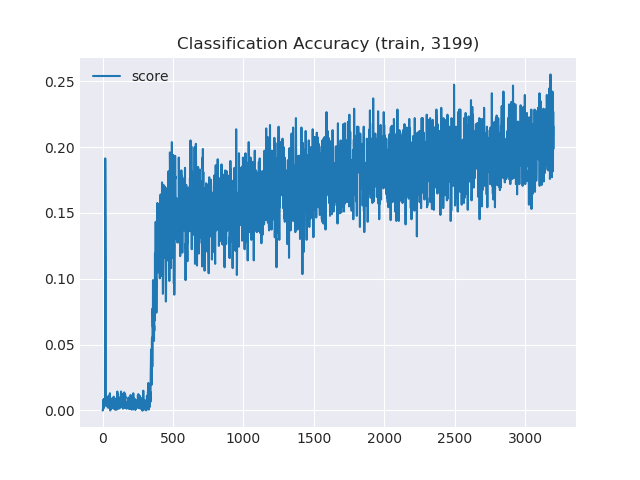
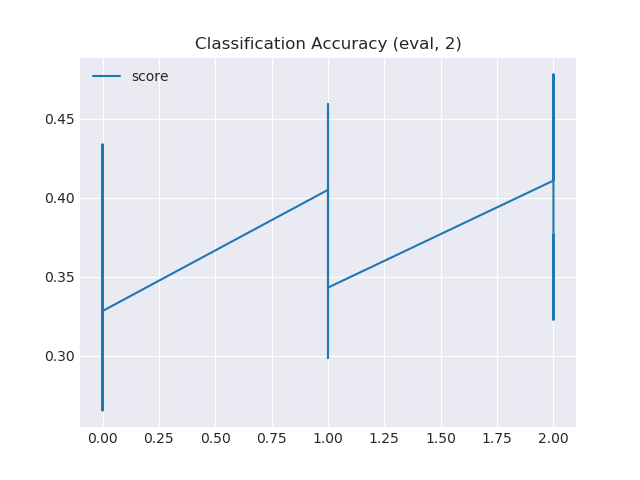
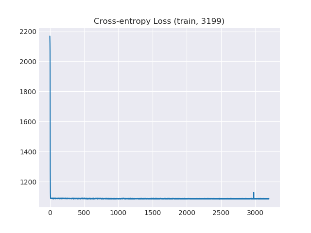
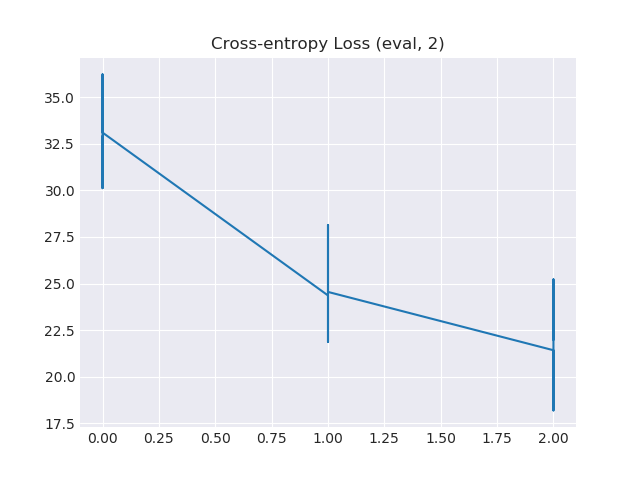

研究日志（九月）¶
2019-09-08¶
继续摸鱼的一天
早上八点从床上爬起来准备做网络赛
结果白给 九点半又滚回寝室爬上床补觉
下午网络赛日常自闭
机械硬盘上pkl约80个/s，npy约100个/s
ssd上1000/s
2019-09-05¶
凌晨
和黎博士在机房里一起研究了半天终于成功使用锐龙3700全核心满速编译出UE4
在黎博士的启发下我也突然想到了解决之前文件读不了的问题的思路
于是原理是把大对象的索引以文件名拆成一个个小文件然后保存在文件夹里
find data/ -name "*_vfeats*.pkl" | xargs -i mv {} ../vfeats/
然后终于让VQA Challenge 2017 TOP 1的模型成功跑了起来，回去睡觉+挂机等待结果……
TODO: 给视觉特征增加缓存。batch_size为512时训练一个epoch居然要近15分钟，查看资源使用情况发现cpu和gpu使用率都很低，应该是由于视觉特征被我拆成12w+个小文件然后卡IO了……
中午
昨晚笔记本带回寝室后没接上电源，结果一夜没动它居然又把电全耗完了
来到机房查看训练结果，相当惨烈。TODO：反思失败原因。
|  |  |
|  |  |
模型虽然没训练成功，今天的天气还真是出奇的好啊。
傍晚
给许兄的依然没想到能优化数据集读入的方法，h5py的几种driver都狂吃内存，查到线索似乎numpy.memmap实现了对大文件的访问和缓存机制。那么问题来了，我怎么将数据转成numpy格式的大文件呢……
2019-09-04¶
拜读了邱锡鹏编写的《神经网络与深度学习》的前两章和全部附录，重温一下数学基础与机器学习的常用符号表达。
完成了习题的warmup部分，然后在第一章实现线性回归的习题里被tensorflow的实现卡了。
另外，整个习题部分错漏百出，目测是临时工编写的？也有可能刚刚才出来还没全部check完成
尝试克隆并构建 https://github.com/peteanderson80/bottom-up-attention 和 https://github.com/markdtw/vqa-winner-cvprw-2017 都失败
trainval_resnet101_faster_rcnn_genome_36.tsv 整个文件有足足45GB 实在是太大了
python读到一半内存占用率超过95.7%然后直接宕机
希望能寻找到能够处理它的方法
或是换个思路……自行提取出特征然后分块做成mmap？
阅读《Learning Visual Knowledge Memory Networks for Visual Question Answering》( http://openaccess.thecvf.com/content_cvpr_2018/html/Su_Learning_Visual_Knowledge_CVPR_2018_paper.html )
依然没有找到较好的融合图像知识（visual knowledge/image knowledge）的方法
希望明天能获得一些收获